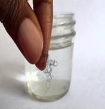

Discover Your Curl Type

There are three different curl groups that you are classified as curly hair from S type waves to those that have afro-caribbean coily hair.
2A to 2C aka wavy hair:
2A hair
These have have slight S waves where hair stick to the head. The hair tends to be fine with a natural sheen however lacks curl definition.
Recommended for 2A: It is recommended to use sealents with tea tree or jajoba oil and refresh the hair with a serum that both battles frizz and moitsrizes.
2B hair
Those with 2B hair tend to be prone to frizz at the crown on their head. Unlike those with 2A hair people with 2B hair will have S waves throughout their hair.
Reccomended for 2B:
2B should use a frizz fighting cream-gell like a pudding or a souffle.Use a condtioning cleanser that contains citrus oils and honey to seal in your hairs natural sheen. A protein treatment that contains mayo, egg, greek yogurt will aid your hair elasticity.
2C hair2C hair are a lot more wavier than 2A & 2B hair, the texture is more coarse and have loose curls rather than waves. 2C hair is more resistant to styles like bantu knots, roller sets.
Reccomended for 2C2C hair is best to difused when damp used upside down for more volume. For best results on day 2or 3 hair is best to use the praying method with either aragn or jajoba oil which will not weigh down the hair. Scrunch product into the hair and do a protein treatment every 2 weeks with avocado or egg.
3A to 3C aka Curly hair 3A hair3A hair is well deined, springy and can be straightened a lot more easily.
Reccomended for 3A:ÂPromenade type products are best used on 3A hair that won't weigh the hair down especially on updo's. It is best to use a daily cleansing conditioner and twirl sections around your finger afterwashed applying the rake and shake method to hair.
3B hair3B hair is more volumous than 3A hair and can be coarse in texture. As this hair is prone to frizz is best to use a styling milk or cream. Moisturize with lightweight marula or sweet almond oil. 3B hair tends to be medium to high porosity where hair is prone to product build up so a sulphate and silicone free shampoo and conditioner is best advised.
3C hair3C hair resembles corkscrews being tighter in density and coarser than the others in this group. 3B hair is suitedfor styles like bantu knots and flexi-rods. When styling use a botanical medium hold gel that provides definition without being harsh on the hair. Massage the head for 30-minutes after washing to maintain volume and definition gently and deep conditon on a weekly-basis.
4A to 4C aka Koily hair4A hair
Porosity Test
There porosity test can tell you a lot about your hair and how you should treat your hair. There are three different levels of porosity, high porosity, normal (medium)porosity and low porosity. Ideally we want to have normal porosity hair. High porosity hair quickly absorb moisture and likewise quickly loose moisture it is also more suspectable to damage, the cuticles are constantly standing up. Medium porosity hair is the best hair to manage and style. Low porosity hair has the cuticles kept shut tight meaning it is difficult for it to absorb porpsity. There are a few tests we can do to determine what our hair porosity might be.
The different ways to test the porosity of your hair are as follows;Water Test
Fill a small glass of water half way and take a strand of clean hair and place it in the glass of water , leave it there for 5 minutes. If the hair has sunk to the bottom of the glass of water you have high pososity hair, if it is floating in the middle of the water it is medium porosity and if it is floating on the the top you have low porosity hair.
Strand Test
Get a clean strand of hair and place it between two fingers, the more bumps and ridges (cuticles) you can feel will determine the porosity of your hair if you have a lot of bumps it means you have high porosity hair.
Other Things to consider
If your hair takes hours to dry naturally it is likely that you have low porosity hair. Low porosity hair to is prone to product build up and is best to use either a cleansing conditioner. If your hair dries within about 30 minutes it is likely you have high porosity hair and is best to have regular deep conditioning treatments.